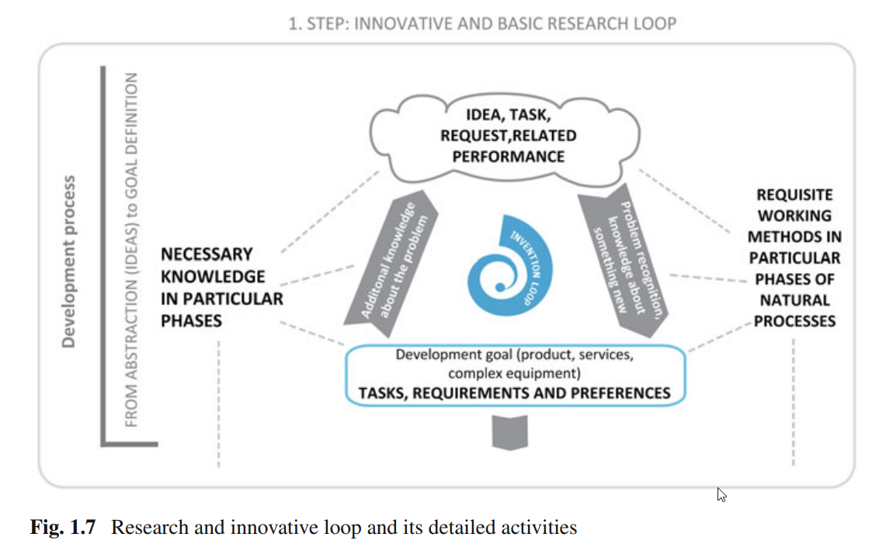
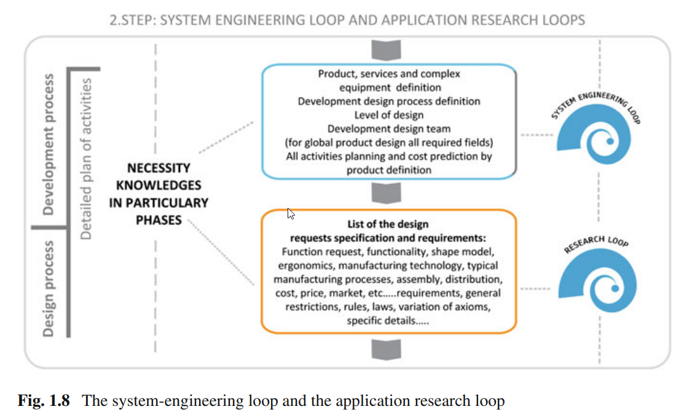
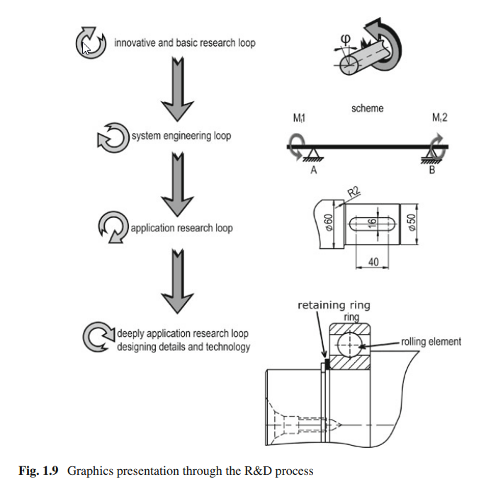
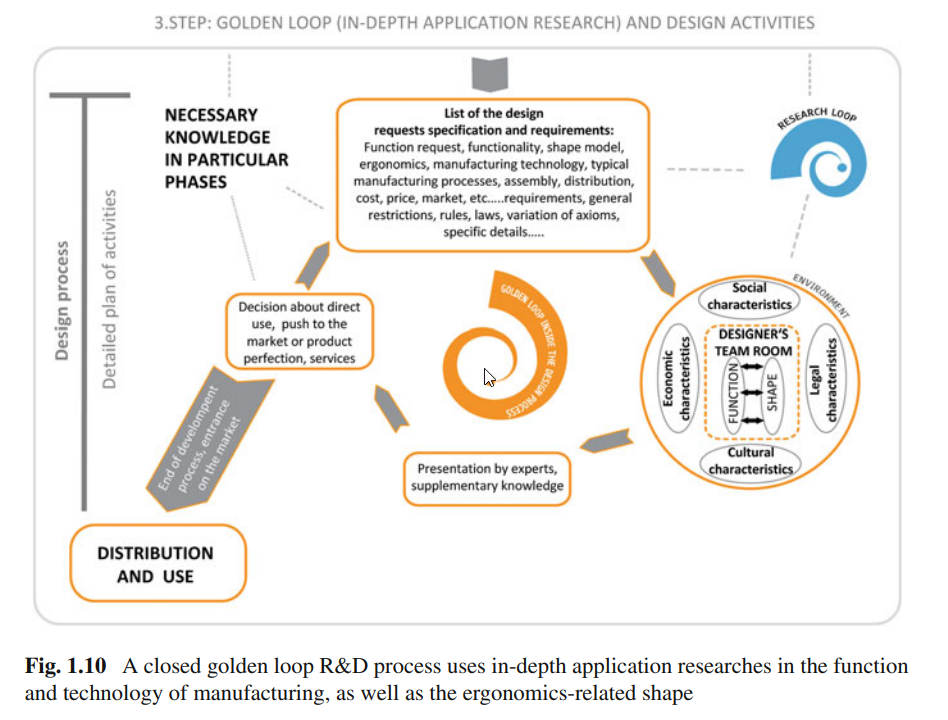

Reference <<
Previous Next >> CAD2CAE
Ebooks
本課程所採用的兩本電子書, 第一本主要用於 Solidworks 2017 與 NX 12 執行零組件繪圖時參考, 而第二本則說明電腦輔助繪圖與設計程式發展歷史, 其中牽涉到許多套件間的開發細節與背景, 這些資料主要用於參考用.
1) 2015- Space Modeling with SolidWorks and NX
https://link.springer.com/book/10.1007/978-3-319-03862-9
2) 2008- The Engineering Design Revolution
The Engineering Design Revolution (a.k.a. cad_history.pdf)
導讀:
第一本電子書標題的所謂 Space 指的是 modeling of objects in 3D space 中的三度空間, 因此標題可以翻為: Solidworks 與 NX (套件)的(三度)空間(零組件)模擬.
有關 Solidworks 的開發緣起, 可以參考 The Engineering Design Revolution 書中的第十八章.
Solidworks 的前身是 2D 概念設計套件: DesignView, 由1983 年從 MIT 機械碩士畢業的 Jon Hirschtick 於 1987 年取得資金 (150 萬美金) 後著手開發, 公司名稱為 Premise. 一開始 DesignView 就設定在當時剛萌芽的 IBM 相容個人電腦上執行. 當時一套 DesignView 商業版定價 1895 美元.
之後 Premise 被 ComputerVision 公司併購, 1993 年Jon Hirschtick 離開 ComputerVision, 隔年一月起便著手與與 Bob Zuffante, Scott Harris, Constantine Dokos 與 Tommy Li 開發 Solidworks: 一套能夠在 PC 上運作的低價 CAD 套件.
1994 年 8 月 PTC 公司草創時編號 3 號的 Michael Payne 離開 PTC, 加入開發 SolidWorks 的團隊. 期間參與投資者還包括日本的 Kubota 公司.
1995 年 10 月 Solidworks 正式推出, 商業版定價每套 3995 美元.
Solidworks 起始開發時採用 ACIS核心, 但正式發表前已經換為 Parasolid 核心, 1997 年 6 月法國達梭公司以 3 億美元併購 Solidworks.
有關 NX (Unigraphics) 的詳細開發緣起, 可以參考 The Engineering Design Revolution 書中的第十九章.
NX 套件的前身為 Unigraphics 早在 1973 年就啟動開發. 2001 年在 EDS 旗下與 SDRC 合併後進行 Unigraphics, I-DEAS 與 SDRC 整合, 產品名稱為 NX, 公司名稱為 UGS, 最終在 2007 年被德國 Siemens 以 35 億美元併購.
2015- Space Modeling with SolidWorks and NX 電子書中的第一章提到在三度空間建立零組件模型的主題包含:
Role and meaning of modelling for engineering
Making a sketch and extrude
Making a sketch and revolve
Auxiliary shapes of modelling Fillet, chamfer
Assessment—combined models
Complex shapes—sweep, loft
Welded structures
Sheet-metal products
Measuring a physical model, digitising, parameterisation
Assessment—physical models
Assemblies of structures with models—bottom-up technique
Assemblies of structures with models—top-down technique
Documentation—assembly drawing
Documentation—working drawing
Assessment—examples as finished units Seminar work.




第一章第一節提到有關電腦教室的相關配置規劃. 以及產品開發流程:
innovative loop (創新迴圈)
The innovative loop is of key importance for recognizing a problem and placing it in space. In the innovation loop we specify the task, the requirements and the wishes that play a part in defining a problem or a technological process
System engineering loop (系統工程迴圈)
The system-engineering loop places an expected result (innovation, a high-quality product)—vital for the materialization of a product logically into space and time.
Application research loop (應用研究迴圈)
The application research loop is important in order to define the parameters that provide an optimum choice of function in the material, the conceptual and the user’s environment.
Golden loop
The golden loop in the development process defines a product in all its details, supplements fundamental researches for all key parameters that define the details and quality materialization of a product.
Reference <<
Previous Next >> CAD2CAE